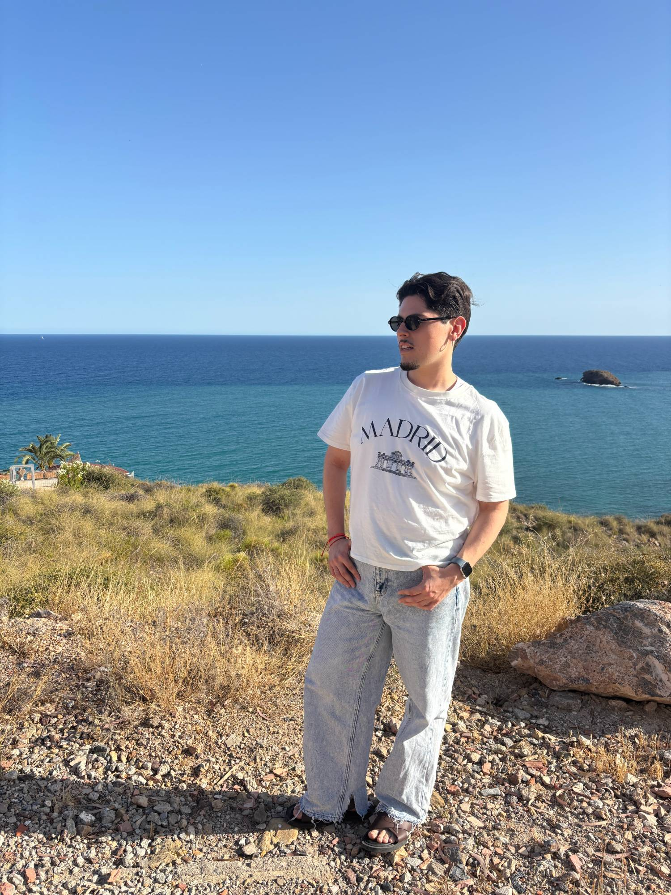

Formación, becas e investigación entre México, Corea del Sur y España.

Perfil académico
Graduado en Publicidad y Relaciones Públicas
Mi formación se reparte entre tres países y tres sistemas universitarios. Empecé en la UPAEP (Puebla, México) con una beca de excelencia obtenida desde el bachillerato, pasé un año en la Universidad Keimyung (Daegu, Corea del Sur) con la beca GKS del Gobierno coreano, y terminé el grado en la Universidad de Murcia.
Ese recorrido es también el tema de mi investigación: cómo la comunicación visual construye memoria colectiva, comparando dos movimientos que ocurrieron a doce años y diez mil kilómetros de distancia.
01 — Trayectoria
Tres universidades, tres países y las becas que lo hicieron posible.
Grado en Publicidad y Relaciones Públicas. Título con Suplemento Europeo, que acredita la formación en todo el Espacio Europeo de Educación Superior.
Suplemento Europeo al TítuloPrograma de intercambio en Publicidad y Medios. Un año lectivo dentro del sistema universitario coreano, con las asignaturas cursadas en inglés.
Beca GKS — Gobierno de Corea del SurPublicidad y Relaciones Públicas. Dos becas de excelencia académica que cubrieron el 60 % de la matrícula, la primera obtenida ya desde el bachillerato.
Dos becas de excelencia — 60 % de la matrículaPrograma del Diploma del IB, con un promedio final de 95 sobre 100. De ahí salió la beca que abrió el resto del recorrido.
Promedio 95/10002 — Acreditaciones
Las pruebas que respaldan el trabajo en tres idiomas.
Lengua materna. Redacción publicitaria y editorial.
Listening & Reading más Speaking & Writing. Nivel avanzado B2.
Acreditación complementaria de comprensión y gramática.
Nivel básico-intermedio, en proceso de certificación oficial.
03 — Investigación
Universidad de Murcia · 2026 · Calificación: Sobresaliente 9.0/10
Análisis comparado y ético del uso de la comunicación visual y la publicidad social en la construcción de memoria colectiva en dos movimientos de resistencia estudiantil: Tlatelolco (México, 1968) y Gwangju (Corea del Sur, 1980). Dos países que conozco por dentro, dos matanzas separadas por doce años, y la pregunta de cómo las imágenes deciden qué se recuerda y qué se olvida.